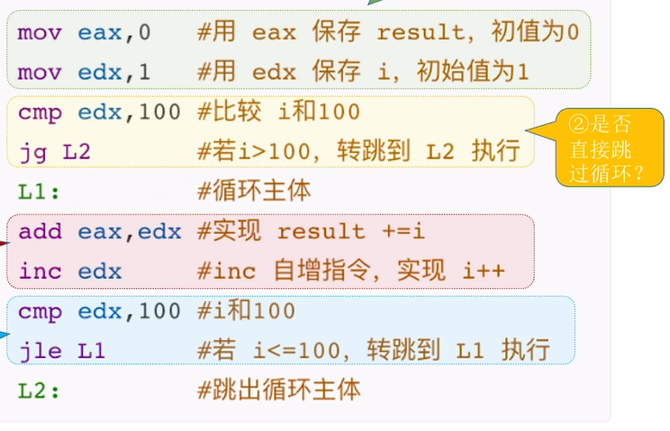
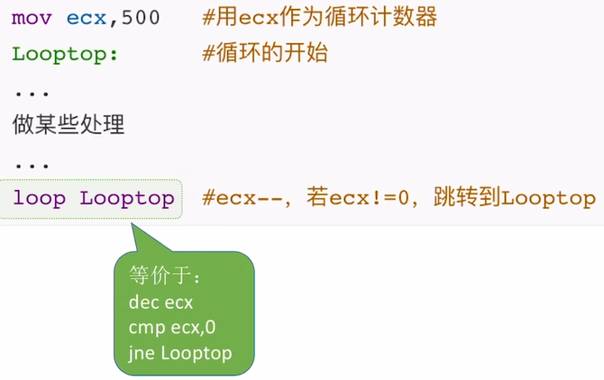

跳转指令的机器代码
一、选择语句的机器级表示
1. 程序中的选择语句
1) 无条件转移指令
- PC 寄存器作用：程序计数器 (PC) 用于指向下一条即将执行的指令地址。在 x86 处理器中，它通常被称为 IP (Instruction Pointer) 寄存器。
无条件转移指令的灵活使用
- 基本格式：
jmp <地址>，使 PC 无条件跳转到指定地址执行。 - 地址参数形式：
- 常数直接给出：如
jmp 128。 - 来自寄存器：如
jmp eax(当eax值为 128 时，等效于jmp 128)。 - 来自主存：如
jmp [999](当主存地址 999 处存储的值为 128 时，等效于jmp 128)。 - 使用标号锚定：如
jmp NEXT，通过标号标记跳转位置。
- 常数直接给出：如
无条件转移指令的特征
- 标号语法：标号以冒号结尾，如
NEXT:。名称可自定义（如L1、L2等）。 - 编程灵活性：使用标号比直接使用地址更灵活，可以避免因程序存储位置变化导致的跳转错误。
- 类比 C 语言：其功能类似于
goto语句，会强制改变程序执行流程。
2) 条件转移指令
- 基本格式：
jxxx <地址>，根据条件判断是否跳转。 - 常用指令：
je：jump when equal (相等时跳转)jne：jump when not equal (不等时跳转)jg：jump when greater than (大于时跳转)jge：jump when greater or equal (大于或等于时跳转)jl：jump when less than (小于时跳转)jle：jump when less or equal (小于或等于时跳转)
- 配合
cmp指令：条件转移前需先用cmp a,b比较两个数。实质是计算a-b并设置标志位，但不保存结果。
3) 应用案例：if-else 语句的汇编语言实现
例题：if-else 语句的汇编语言实现
实现方式一：使用
jg指令。; 假设 eax 存储 a, ebx 存储 b cmp eax, ebx ; 比较 a 和 b jg IF_BLOCK ; 如果 a > b, 跳转到 IF_BLOCK ; else 代码块开始 ; ... jmp END_IF ; 跳过 IF_BLOCK IF_BLOCK: ; if 代码块开始 ; ... END_IF:这种方式将
else代码块放在前面，if代码块放在后面。- 寄存器分配：通常用
eax存储a，ebx存储b，ecx存储c。
cmp 指令的底层原理
- 运算本质：
cmp a,b实际执行a - b运算，但不保存结果，只根据运算结果设置标志位。 - 标志寄存器：
- OF (Overflow Flag - 溢出标志)：运算溢出时置 1。
- SF (Sign Flag - 符号标志)：结果为负时置 1 (最高位为 1)。
- ZF (Zero Flag - 零标志)：结果为零时置 1。
- CF (Carry/Borrow Flag - 进位/借位标志)：无符号数运算有进位/借位时置 1。
- 条件判断依据：
je：检查ZF == 1jne：检查ZF == 0jg：检查ZF == 0 && SF == OFjge：检查SF == OFjl：检查SF != OFjle：检查SF != OF || ZF == 1
二、循环语句的机器级表示
1. 用条件转移指令实现循环
1) 例题：for 循环求和
实现框架：用条件转移指令实现循环通常需要以下四个部分构成：
- 循环前的初始化：对循环变量进行初始赋值。例如，
mov eax, 0初始化result(结果变量)，mov edx, 1初始化i(循环变量)。 - 是否直接跳过循环：首次进入循环前，需要判断循环条件。例如，
cmp edx, 100比较i和100，jg L2（如果i > 100，则跳到L2，即跳过循环）。 - 循环主体处理：执行循环的核心逻辑。例如，
add eax, edx实现result += i。 - 是否继续循环：每轮循环结束后，更新循环变量并再次判断条件。例如，
inc edx实现i++，然后cmp edx, 100和jle L1判断是否继续循环（如果i <= 100，则跳回L1继续循环）。
寄存器选择：通常用 eax 存储结果变量，edx 存储循环变量（如 i）。但具体的寄存器选择需要根据实际情况灵活调整。
条件转移特点：通过 cmp 比较指令配合 jg/jle 等条件跳转指令实现循环控制。跳转目标需要用标号标记（如 L1、L2）。

2. 用 loop 指令实现循环
1) 例题：循环计数
基本语法：loop 标号。这条指令会自动执行以下操作：
ecx寄存器值减 1 (dec ecx)。- 判断
ecx是否为 0。 - 如果
ecx ≠ 0，则跳转到指定标号处执行。
寄存器限制：必须使用 ecx 作为计数器，这是 x86 架构的规定。例如，mov ecx, 500 初始化循环次数。
等价实现：loop 指令等价于以下三条指令组合：

loopnz (Loop Not Zero)：在 ecx ≠ 0 且 ZF = 0 (上次运算结果非零) 时循环。
loopz (Loop Zero)：在 ecx ≠ 0 且 ZF = 1 (上次运算结果为零) 时循环
1. 高级语言的函数调用
- 调用栈结构：
- 程序运行时系统分配的内存区域，用于实现函数调用，其作用类似一摞盘子。
- 栈底：存储硬件和系统信息。
- 栈顶：存储当前正在执行函数的栈帧 (Stack Frame)。
- 栈帧变化过程：
- 程序从
main函数开始执行，首先创建main函数的栈帧。 - 当
main函数调用P函数时，P的栈帧被压入栈顶。 - 当
P函数进一步调用Q函数时，Q的栈帧再次被压入栈顶。 - 当函数执行完毕返回时，其栈帧会从栈顶弹出。
- 程序从
- 栈帧内容：
- 包含局部变量（例如
caller函数中的temp1、temp2、sum）。 - 包含函数调用相关信息（例如传递给
add函数的参数）。
- 包含局部变量（例如
2. x86 汇编语言的函数调用
- 关键指令：
call指令：实现函数调用，语法为call 标号(例如call add)。ret指令：实现函数返回。
- IP 寄存器作用：
- 即程序计数器 (PC)，它始终指向下一条要执行的指令的地址。
call和ret指令都会改变IP寄存器的值。
- 调用机制 (call 执行过程)：
- 将当前
IP值（即call指令下一条指令的地址，也就是函数的返回地址）压入栈中保存。 - 将
IP寄存器的值修改为被调用函数（如add）的第一条指令的地址，从而实现跳转。
- 将当前
- 返回机制 (ret 执行过程)：
- 从栈顶取出之前保存的
IP旧值（即返回地址）。 - 将
IP寄存器恢复为该值，使程序流回到调用方函数的下一条指令继续执行。
- 从栈顶取出之前保存的
- 核心问题解决：
- "过得去"：通过
call指令保存返回地址并跳转到目标函数。 - "回得来"：通过
ret指令恢复返回地址，使程序返回到调用点。
- "过得去"：通过
3. 函数调用的机器级表示的总结 (07:18)
- 调用者行为：
- 执行
call指令。 call指令将返回地址（call下一条指令的地址）压入栈顶。call指令跳转到被调用函数的第一条指令。
- 执行
- 被调用者行为：
- 执行一系列处理逻辑。
- 执行
ret指令。 ret指令从栈顶找到并取出返回地址，出栈并恢复IP寄存器的值。
- 指令作用总结：
call指令：将IP旧值压栈保存（保存在函数栈帧顶部）。ret指令：从函数栈帧顶部找到IP旧值，将其出栈并恢复IP寄存器。
4. 问题答疑
- 待解决问题：
- 参数传递机制：
call/ret指令本身不直接带参数，具体如何传递？ - 返回值传递机制：函数执行完毕如何将结果返回给调用方？
- 栈帧数据访问方式：如何通过指针或寄存器访问栈帧中的数据？
- 栈帧具体内容组成：除了局部变量和返回地址，还有哪些信息？
- 栈帧排列顺序问题（图示中
add栈帧在caller上方）：栈在内存中是如何增长的？
- 参数传递机制：
1. 为什么栈底画在上面，栈顶画在下面？
- 地址空间分配：
- 在 32 位系统中，每个进程被分配 4GB 的虚拟地址空间。
- 其中，高地址 1GB 通常保留给内核区使用。
- 低地址 3GB 则分配给用户区。
- 栈的位置特性：
- 函数调用栈位于用户区。
- 栈底处于高地址（靠近内核区）。
- 栈顶则向低地址方向增长（向用户区底部扩展）。
- 图示惯例：
- 教材将栈底画在上方，栈顶画在下方，是为了直观表示地址的高低关系。
- 这与在数据结构课程中，栈通常被画成从下往上增长的图示方向相反。
2. 用汇编语言指令操作栈帧里的数据
2.1 标记栈帧范围
- 关键寄存器：
EBP(Extended Base Pointer)：32 位扩展基址指针寄存器，通常指向当前栈帧的底部（高地址端）。它提供了一个稳定的基准点来访问栈帧中的数据。ESP(Extended Stack Pointer)：32 位扩展栈指针寄存器，始终指向当前栈帧的顶部（低地址端）。它是栈的实际操作指针。
- 操作单位：
- x86 系统默认以4 字节（DWORD）为单位进行栈操作（如
push和pop）。
- x86 系统默认以4 字节（DWORD）为单位进行栈操作（如
- 动态调整：
- 函数调用和返回时，
EBP和ESP会同步更新，以指向新栈帧的边界，从而维护栈的结构。
- 函数调用和返回时，
2.2 访问栈帧数据 (04:14)
push、pop 指令
- 操作特性：
push 操作数：先将ESP寄存器的值减去 4（即向下移动 4 字节），然后将操作数的值写入ESP指向的内存地址。pop 目标位置：先将ESP指向的内存地址中的值读取到目标位置，然后将ESP寄存器的值加上 4（即向上移动 4 字节）。
- 操作数类型：
push支持立即数、寄存器值或内存数据。pop的结果可存入寄存器或内存地址。
- 例题:
push/pop指令应用 (05:24)- 执行过程分析：
push eax(假设eax = 211)：ESP下移 4 字节，然后将 211 写入新的栈顶位置。push 985：ESP再下移 4 字节，然后将立即数 985 写入新的栈顶位置。push [ebp+8]：读取ebp上方 8 字节处的值（假设为 666），然后将其压栈（ESP下移 4 字节，写入 666）。pop eax：将当前栈顶值（666）弹出到eax寄存器，ESP上移 4 字节。pop [ebp+8]：将新的栈顶值（985）写入ebp+8的内存位置，ESP上移 4 字节。
- 执行过程分析：
mov 指令
- 灵活访问：
- 通过
EBP/ESP寄存器加上或减去偏移量，可以直接访问栈中任意位置的数据，实现随机存取。
- 通过
- 指针调整：
- 使用
sub或add指令直接修改ESP寄存器的值，可以扩展或收缩栈空间，为局部变量预留空间或释放空间。
- 使用
- 例题:
mov指令应用 (08:17)- 典型操作序列：
sub esp, 12：将ESP减去 12，扩展 12 字节的栈空间，通常用于为局部变量分配空间。mov [esp+8], eax：将eax寄存器中的值写入到ESP当前指向地址向上偏移 8 字节的栈中位置。mov [esp+4], 985：将立即数 985 写入到ESP当前指向地址向上偏移 4 字节的栈中位置。mov eax, [ebp+8]：从EBP寄存器指向地址向上偏移 8 字节的栈中位置（通常是函数参数）读取值到eax寄存器。add esp, 8：将ESP加上 8，回收 8 字节的栈空间，通常在函数返回前清理局部变量空间。
- 典型操作序列：
1. 标记栈帧范围
- 寄存器作用： 在 x86 架构中，CPU 内部的
EBP(Extended Base Pointer) 和ESP(Extended Stack Pointer) 两个寄存器共同标记了当前正在执行函数的栈帧范围。EBP功能：它始终指向当前栈帧的底部（也称为基地址或帧指针），通常是栈帧中地址较高的一端。ESP功能：它始终指向当前栈帧的顶部（也称为栈顶指针），是栈帧中地址较低的一端，所有新的数据操作（如push）都会从这里开始。
- 栈操作单位：x86 系统默认以4 字节（DWORD）为基本操作单位进行栈操作（例如
push和pop）。
2. 函数调用时，如何切换栈帧
当一个函数调用另一个函数时，需要建立新的栈帧：
call指令的双重作用：- 将返回地址（即
call指令下一条指令的 IP 旧值）压入栈中保存。这相当于执行了一条push IP指令。 - 设置
IP寄存器的新值，使其跳转到被调用函数的第一条指令的地址。这相当于执行了一条jump指令。
- 将返回地址（即
- 栈帧建立步骤：被调用函数通常会在其开头执行以下操作来建立自己的栈帧：
push ebp：将上一层函数（调用者）的栈帧基址（即旧的EBP值）压栈保存。这是为了在函数返回时能恢复到调用者的栈帧。mov ebp, esp：将当前ESP的值赋给EBP。此时，ESP指向的是新栈帧的顶部（因为call指令和push ebp已经移动了ESP），将这个地址设置为当前函数的栈帧基址（新的EBP值）。
enter指令：这个指令可以替代上述的push ebp和mov ebp, esp两条指令，实现相同的功能，用于更简洁地建立栈帧。- 栈帧链结构：由于每个栈帧的底部都必然存储了上一层函数的基地址（通过
push ebp保存），因此所有的栈帧会形成一个链式结构，使得程序可以沿着这个链条回溯到之前的调用者。
3. 函数返回时，如何切换栈帧
当一个函数执行完毕并准备返回给调用者时，需要恢复到调用者的栈帧：
- 恢复步骤：被调用函数通常在其返回前执行以下操作来恢复栈帧：
mov esp, ebp：将ESP寄存器的值设置为EBP的值。这会使ESP指向当前栈帧的底部，即清除当前函数的所有局部变量和参数（因为它们都在EBP和旧ESP之间）。pop ebp：从栈顶弹出元素并写入EBP寄存器。此时栈顶存放的是之前保存的上一层函数的EBP旧值，通过pop操作将其恢复到EBP中。
leave指令：这个指令等价于上述的mov esp, ebp和pop ebp两条指令，用于更简洁地恢复栈帧。ret指令机制：在栈帧恢复之后，ret指令会从栈顶获取之前call指令压入的返回地址，并将其恢复到IP寄存器中，从而实现程序流的返回。- 例行处理：所有非
main函数在返回前必须执行leave指令（或其等效操作：mov esp, ebp和pop ebp），以正确恢复调用者的栈帧。
4. 函数调用的机器级表示的总结
- 调用者流程：
- 执行
call指令：它负责压入返回地址并跳转到被调用函数的入口。
- 执行
- 被调用者流程：
- 开头：通常是
enter指令或push ebp+mov ebp, esp来建立新栈帧。 - 中间：执行函数的核心功能代码。
- 结尾：通常是
leave指令（或mov esp, ebp+pop ebp）来恢复旧栈帧，紧接着是ret指令来返回到调用者。
- 开头：通常是
- 关键特征：所有被调用函数的汇编结构都遵循这个固定的模式，形成一个标准的函数调用框架。
5. 一个函数的汇编代码框架
5.1 例题: 函数汇编代码分析
- 题目解析：
- 函数开头必现指令：
push ebp(其后通常会隐含mov ebp, esp)。 - 函数返回前必现指令：通常会隐含
leave操作（可能在代码中被省略表示，但逻辑上必须存在）。
- 函数开头必现指令：
- 结构验证：一个标准的函数汇编代码框架应完全符合上述“开头保存基址 + 结尾恢复基址”的结构。
- 递归特征：在分析中可能会发现函数内部再次
call自身（例如在00401025处的指令），这是递归函数的典型特征。
1. 一个栈帧内可能包含哪些内容
一个函数调用在运行时，会在栈上创建并维护一个独立的区域，称为栈帧（Stack Frame）。一个典型的栈帧从底部（高地址）到顶部（低地址）可能包含以下内容：
- 底部固定区域：
- 每个栈帧的底部 4 字节必定保存了上一层栈帧的基址（即调用者的
EBP值）。这使得函数返回时能恢复到调用方的栈帧状态，形成一个栈帧链。
- 每个栈帧的底部 4 字节必定保存了上一层栈帧的基址（即调用者的
- 局部变量区：
- 紧接着
EBP（但地址更低）是当前函数定义的局部变量。 - 在 C 语言中，通常越早定义的变量越靠近栈底（高地址），而越晚定义的变量越靠近栈顶（低地址）。
- 紧接着
- 空闲区域（Padding）：
- 由于 GCC 编译器要求非叶子函数的栈帧大小必须是 16 字节的整数倍，可能会产生未使用的“零头”区域来满足对齐要求。
- 正在运行的函数（例如mian函数，即不调用其他函数的函数）可以不受 16 字节对齐的限制。
- 参数传递区：
- 靠近栈顶（但地址更高）存储了调用下层函数时传递的参数。
- 参数列表中越靠前的参数越靠近栈顶（低地址）。
返回地址：
- 栈顶（最低地址）必定保存着
call指令压入的IP寄存器值，即函数的返回地址。这是函数执行完毕后程序流应该返回的位置。
- 栈顶（最低地址）必定保存着
访问规则：
- 局部变量访问：通常通过
EBP - n的偏移量来访问，其中n是相对于EBP的负偏移量。例如，[ebp-4]可能对应于 C 语言中最后定义的局部变量。 - 参数访问：被调用函数通常通过
EBP + n的偏移量来访问传递进来的参数。例如，[ebp+8]可能对应于传递给该函数的第一个参数（因为[ebp]是旧EBP，[ebp+4]是返回地址）。 - 返回值传递：在 x86 体系结构中，单个返回值通常通过
EAX寄存器传递。
- 局部变量访问：通常通过
1.1 例题: caller 函数汇编代码 (08:35)
- 代码解析：
- 栈帧建立：
push ebp：保存上一层（例如main函数）的栈帧基址。mov ebp, esp：设置当前caller函数的栈帧基址。sub esp, 24：为caller函数的局部变量和可能的临时数据分配 24 字节的栈空间（24 = 16 × 1 + 8，满足 16 字节对齐要求）。
- 局部变量初始化：
mov [ebp-12], 125：将 125 写入ebp偏移-12的位置，对应temp1 = 125（在 C 语言中，temp1可能是最后定义的变量，因为它的地址最低）。mov [ebp-8], 80：将 80 写入ebp偏移-8的位置，对应temp2 = 80。sum变量的存储位置也位于局部变量区，但在这里未显式初始化。
- 参数传递过程（给
add函数）：- 参数传递通过寄存器中转（因为
mov指令限制不能直接从内存到内存）。 mov eax, [ebp-8]：读取temp2的值到eax。mov [esp+4], eax：将eax的值（temp2）作为第二个参数y写入当前栈帧顶部上方 4 字节处（即esp+4）。mov eax, [ebp-12]：读取temp1的值到eax。mov [esp], eax：将eax的值（temp1）作为第一个参数x写入当前栈帧的顶部（即esp）。
- 参数传递通过寄存器中转（因为
- 函数调用与返回：
call add：自动将返回地址压栈，并跳转到add函数。add函数通过[ebp+8]和[ebp+12]访问这两个参数。add函数的返回值通过eax寄存器传递回caller函数。caller函数会将eax的值存入其自身的局部变量sum。
- 栈帧建立：
- 关键观察：
- 局部变量存储顺序与 C 语言定义顺序相反（后定义的变量地址更低）。
- 参数传递有时必须通过寄存器中转（例如，不能直接
mov [mem1], [mem2]）。 - 返回值机制统一使用
EAX寄存器。 - 栈帧大小设计通常需要满足 16 字节对齐要求。
2. 函数调用的机器级表示的总结
- 核心指令：函数调用涉及两个关键指令：
call和ret，它们会改变程序的执行流。 - 参数传递：在
call指令前，调用参数需要被写入当前栈帧的顶部区域。这可以通过push指令或mov指令配合ESP偏移量来实现。 - 返回地址处理：
call指令会自动将返回地址压栈保存，并跳转到被调用函数的第一条指令。 - 局部变量存储：函数内部的局部变量通常存储在
EBP的负偏移量处，例如[ebp-4]、[ebp-8]等位置。 - 返回值传递：被调用函数通过
EAX寄存器向上层函数传递返回值。调用者通过EAX寄存器获取并使用这个返回值。 - 寄存器保护：如果调用前某些寄存器（如
EAX、EDX、ECX）存有重要数据，且被调用函数可能会修改这些寄存器，那么调用者需要先将它们压栈保存，在调用返回后再从栈中恢复。
3. 函数调用栈的总结
3.1 栈帧的概念与结构
- 基本概念：一个栈帧对应一次函数调用，存储了该函数执行所需的所有相关信息。
- 地址方向：在 x86 体系中，栈的底部在高地址方向，栈顶在低地址方向，并且以 4 字节为单位进行操作。
- 寄存器标记：
EBP指向当前栈帧的底部 4 字节（调用者的EBP值）。ESP指向当前栈帧的顶部 4 字节（返回地址）。
- 典型结构（从底向顶，高地址到低地址）：
- 上一层栈帧基址 (
EBP旧值) - 若干个局部变量
- 未使用区域（因栈帧大小需为 16 字节整数倍而产生的填充）
- 部分寄存器值（非必须，视函数和编译器情况保存）
- 若干个调用参数
- 返回地址 (
IP旧值)
- 上一层栈帧基址 (
3.2 栈帧的切换
- 进入函数：在函数开头，需要执行
enter指令（等价于push ebp+mov ebp, esp）来建立新的栈帧。 - 离开函数：在函数返回前，需要执行
leave指令（等价于mov esp, ebp+pop ebp）来恢复上一层的栈帧。 - 栈操作指令：
push：数据压栈，ESP值减 4。pop：数据出栈，ESP值加 4。
- 寄存器保护：必要时，需要手动保存
EAX、EDX、ECX等通用寄存器的值到栈中，以防止它们在函数调用过程中被修改而导致中间结果丢失。
3.3 函数调用的过程
- 调用前准备：
- 将函数参数写入当前栈帧的顶部区域（通过
push或mov [esp+offset]）。 - 保存可能被被调用函数修改的、且调用者后续仍需使用的必要寄存器值。
- 将函数参数写入当前栈帧的顶部区域（通过
call指令执行：- 将
IP旧值（返回地址）压栈保存。 - 设置
IP新值，跳转到被调用函数的入口。
- 将
- 返回处理：
- 被调用函数将返回值写入
EAX寄存器。 ret指令从栈顶恢复IP旧值，程序流回到调用者。
- 被调用函数将返回值写入
3.4 栈帧内部数据的访问
- 局部变量访问：通常通过
[ebp-offset]，例如[ebp-4]、[ebp-8]等地址来访问。 - 参数访问：通过
[ebp+offset]，例如[ebp+8]、[ebp+12]等地址来访问上一层函数传递的参数。 - 数据操作方式：
- 使用
push/pop指令结合ESP操作栈顶数据。 - 使用
mov指令结合EBP/ESP加上偏移量来访问栈中任意特定位置的数据。
- 使用